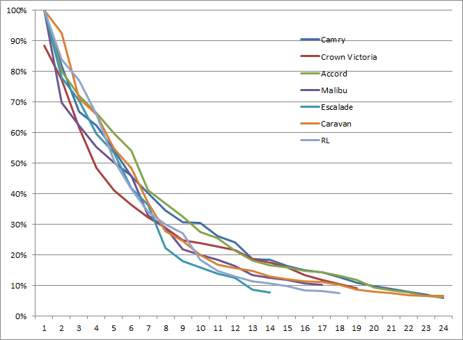

LGD¶
at the time of default, LGD is a simple calculation:
predicting LGD is very difficult with current models tending to be very complex
And so, recovery costs and asset value are key considerations when trying to both predict losses and actually operate a fico.
Recovery Costs¶
can be projected fairly easily, in particular if a 3rd party is contracted for repossession and/or storage and/or sale
if repo companies contracted for sale, they generally get below market value as usually dispose through auction or otherwise
could be a recovery benefit if Opco takes product back into inventory and sells it at market value (and market value is more than the princpal owed)
agreement between Opco / Fico could govern terms at which Opco would take back into inventory, e.g. at what price would Opco buy it back
Asset Value¶
The value of an asset has several features that add uncertainty LGD.
Changes over Time
Generally, the value of an asset decays exponentially. The principal on a loan almost always “decays”, or is repaid, straight-line.
I think most people understand this about new vehicles. If a person gets 100% financing on a new car, I think its generally understood that the car is worth less than the amount owed the moment it is driven of the car lot.
this is commonly thought of as a risk to the buyer/borrower. If forced to sell the vehicle and settle the loan, they would have to pay out of pocket for some portion.
BUT this is also a risk to seller/lender, who would also be “out of pocket” whatever amount the resale value is less than the amount owed (this is the loss given default).
Beyond that, we all understand in the car market that not all assets depreciate at the same rate. Luxury cars are understood to hold their value better, for example.

Lease v Loan
leases and loans have different features that result in very different LGDs
Leasing has lower recovery costs
Leasing may be higher risk B/C you MUST take the asset back.
Results in storage costs, resale market risk
Can avoid with 0% residual at maturity.
Leasing has potential for >100% recovery.
Beta distribution typically used for LGD but for lease assets, non-parametric estimates are likely more accurate.
Fico Processes for Evaluating LGD ongoing would include
internal: value equipment based on expert opinions of Opco
external: value based on external sources like auctions, brokers, or appraisers.
over time, collect internal data on historical outcomes and compare with expectations
external model: there are likely datasets and models available from 3rd parties